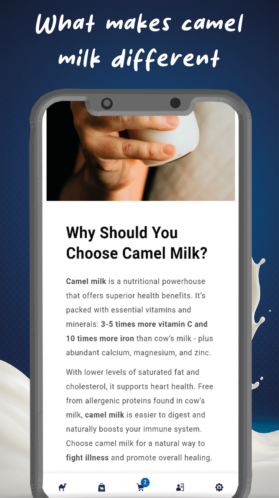

The Intersection of Tech and Biology
This repository contains the source code for the CamelWay Android App, designed to provide seamless access to premium Low-Temperature Spray Dried (LTSD) camel milk products and educational resources regarding gut health and the microbiome.



🔬 Scientific Foundation (2024-2026)
Our technology is backed by rigorous research on exosomal miR-148a-3p and its role in NF-κB pathway suppression.
- Harvard Dataverse: View Dataset (DOI: 10.7910/DVN/TYP1LC)
- Kaggle Analysis: Bioactive Data Visualizations
Key Features:
- Real-time access to bioactive-preserved camel milk (LTSD technology).
- Educational hub for IBD, IBS, and neurodiversity support.
- Transparency: Open-source code for trusted mobile health integration.